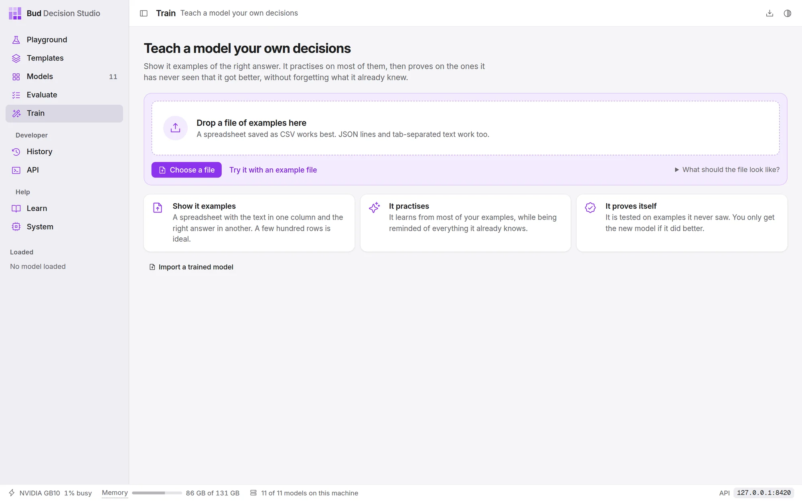
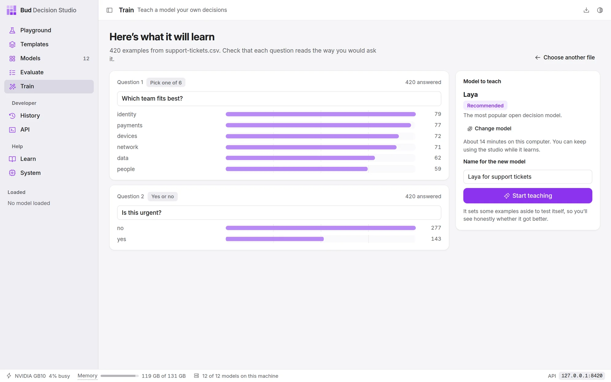
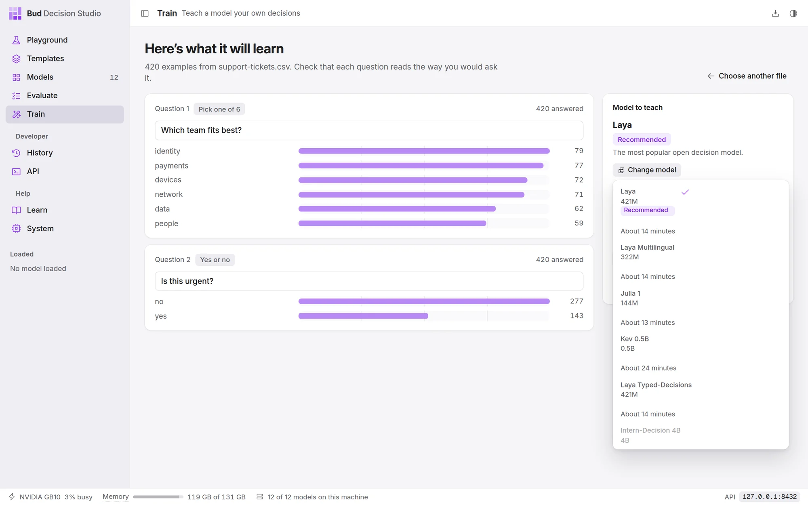
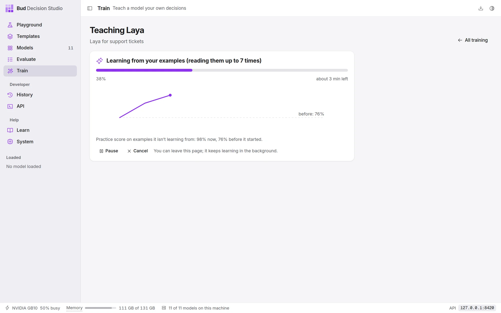
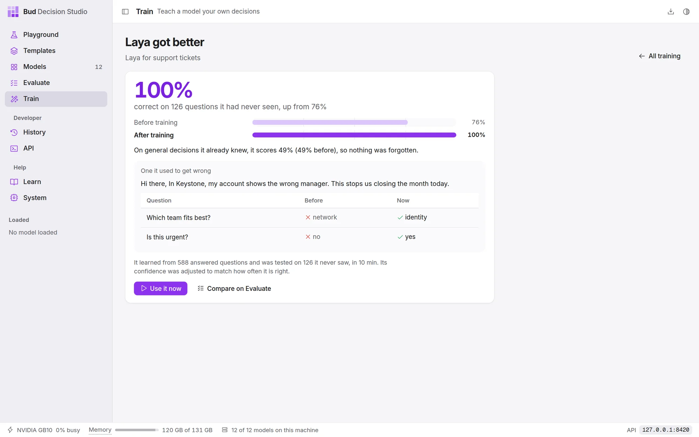
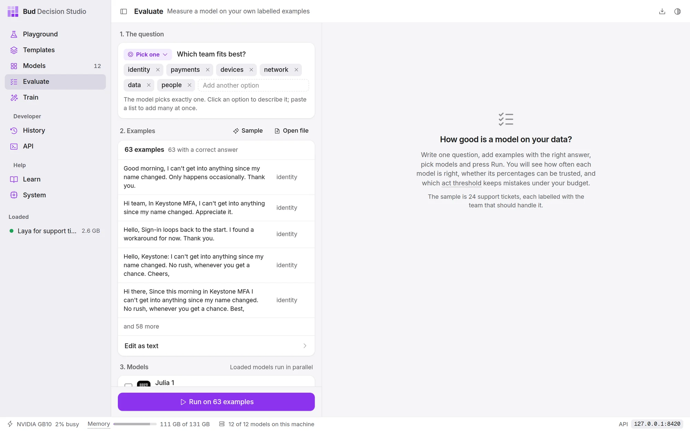
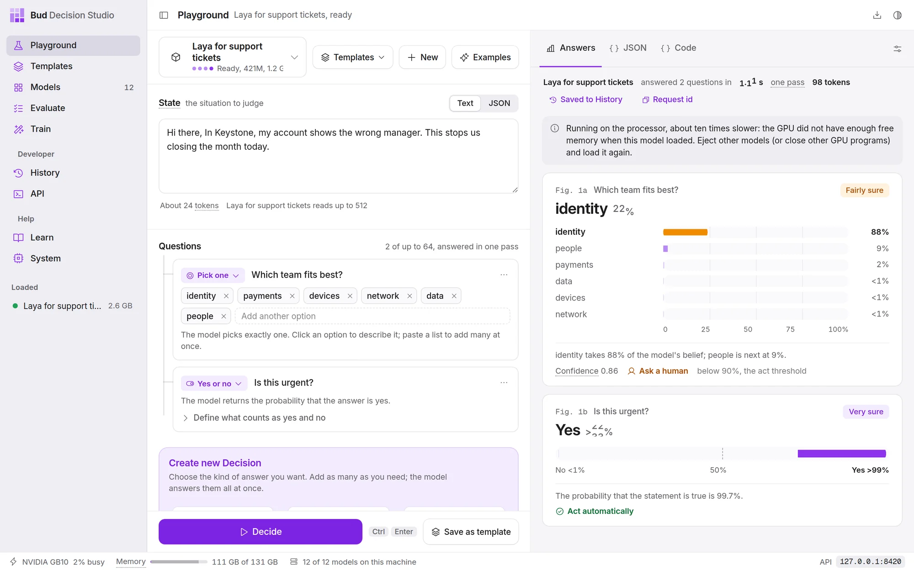
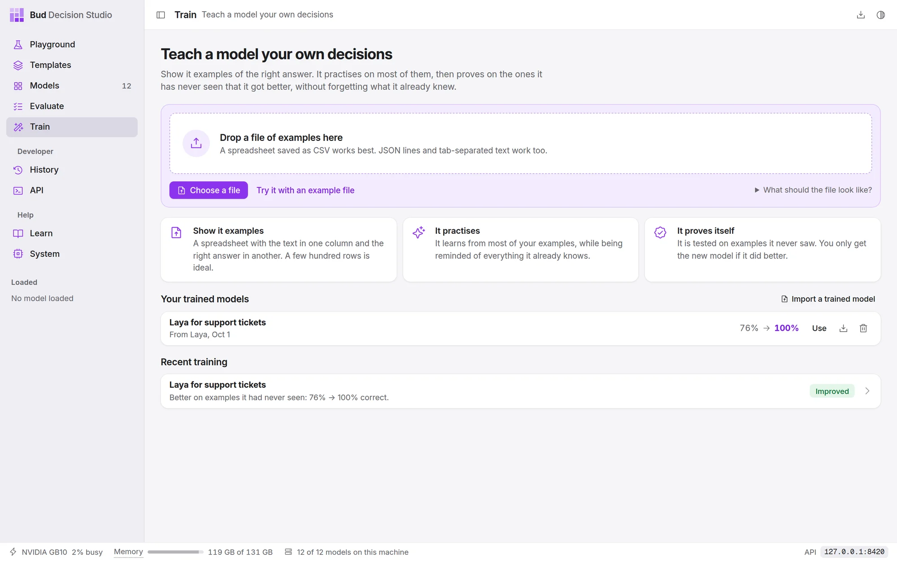

DocsUser manual
Train
Train teaches one of the models your own decisions. Give it a file of situations and the answers you would have given; it picks a model, trains it on most of them, tests it on the rest, and adds the new model to the studio only if it is clearly better and has not got worse at anything else.
Before you start#
Training runs on this computer's GPU and needs no account or upload: your examples never leave the computer.
- A GPU. An NVIDIA RTX 30 series or newer (including the DGX Spark and other GB10 machines) or an Apple M2 or newer works. Intel Arc and Core Ultra graphics, AMD on Linux, older NVIDIA cards and the Apple M1 are experimental: the page offers Try training on this GPU to switch them on. On a computer with only a processor, the page says training isn't available; every model still runs there.
- A file of examples. A spreadsheet saved as CSV is easiest: one column with the text, and one column per answer. A few hundred rows is ideal; fewer than 30 is refused. What a good file looks like.
- The model, downloaded. The page only offers models that are on this computer.

Add your examples#
Drop a file on the page, choose Choose a file, or choose Try it with an example file to use 420 made-up IT support tickets, each labelled with the team that should handle it and whether it is urgent. What should the file look like? shows a three-row example.
The studio reads CSV, tab-separated text, JSON lines and the studio's own training format, which is described in Teach a model your own decisions. From a plain table it works out the questions itself:
| A column holding | Becomes |
|---|---|
| the longest text | the situation the model reads (several text columns become one structured situation) |
| yes and no (or true/false, 1/0) | a Yes or no question, such as "Is this urgent?" |
| whole numbers in a short range, in a column named like a rating (stars, priority, severity) | a Rate on a scale question |
| up to 64 other different answers | a Pick one question with those answers as its options |
Check what it will learn#

Each question is shown with how many examples answer it and how often each answer appears. The text box is the question's instruction, the sentence the model reads: reword it the way you would ask it. Problems are listed under the questions in plain words, such as an answer that appears too rarely or examples that are too few; a problem shown in red stops training until the file is fixed.
On the right:
- Model to teach is the studio's recommendation. It favours the model that learned most in the studio's own tests and takes points off any model that would take more than half an hour on this computer. Change model lists the others; a model that can't learn these examples says why (not downloaded, too large for this GPU, can't read images, too many options).
- About N minutes is the estimate for this computer. Larger models take an hour or more for a few hundred examples.
- Name for the new model is how it appears in the model list.

Choose Start teaching.
While it learns#

The page shows what it is doing, how far it has got and about how long is left. The chart is the practice score: how often the model is right on a set of your examples it is not learning from, measured every few minutes, against the dashed line where it started. You can leave the page; training carries on in its own process, and the Train page shows it at the top while it runs.
- Pause stops after the current step and keeps what it has learned; Continue carries on from there.
- Cancel stops and keeps nothing.
- Only one training runs at a time on a computer. A second one waits and starts by itself when the first is done.
If other programs take the memory it needs, training waits and continues by itself when there is room. If your examples need more memory than the model's share, it uses smaller batches or a slower method that needs less memory, rather than taking memory from other programs.
The result#

The large number is how often the new model is right on examples it never saw during training, with the original model's score beside it. Under it:
- General decisions it already knew. The same general questions, which training never touches, answered before and after. This is the check for forgetting.
- One it used to get wrong. A held-out example the original model answered wrongly and the new one answers rightly.
- Use it now opens that example in the Playground with the new model selected.
- Compare on Evaluate opens Evaluate with the held-out examples loaded and both models ticked, so you can see the charts and choose an act threshold.


The new model is kept only if all of these hold:
- it is better on examples it never saw, and that is unlikely to be luck;
- it has not become worse at general decisions: a clear drop of 2 points or more stops it, and so does a smaller clear drop that the gain on your examples doesn't outweigh three times over;
- it doesn't give the same answer to almost everything;
- the saved model, loaded the way the studio serves models, answers exactly like the one that was trained.
If the only problem is that it got worse at general decisions, it starts again from the original model once, more gently, before giving up. Fine-tuning and its safeguards explains each check.
When the original stays#
If the new version isn't kept, the page says why in one sentence, and the original model is unchanged. Teach another model instead starts the same examples on the next model that can learn them, with its time estimate. If the original model already gets almost all of your examples right, the page says so: there was little left to learn.
Trained models#

A trained model is a model like the others: it appears in the Playground's model list, on the Models page with a Fine-tuned badge, in Evaluate, and to your code under its own id (the Playground's Code tab shows it). It loads the original model and adds a small file of changes, a few to a few hundred MB, so a trained model takes no more memory than the original.
Each row under Your trained models has:
- Use, which opens the model in the Playground on an example from its training data;
- Export , which saves it as one .zip to use on another computer;
- Delete , which removes it (the original model is untouched).
Import a trained model adds a .zip exported from any copy of the studio. The model it was trained from must be one the studio knows; download it on the Models page if it isn't on this computer yet.
Recent training lists past and current trainings; open one to see its result again.